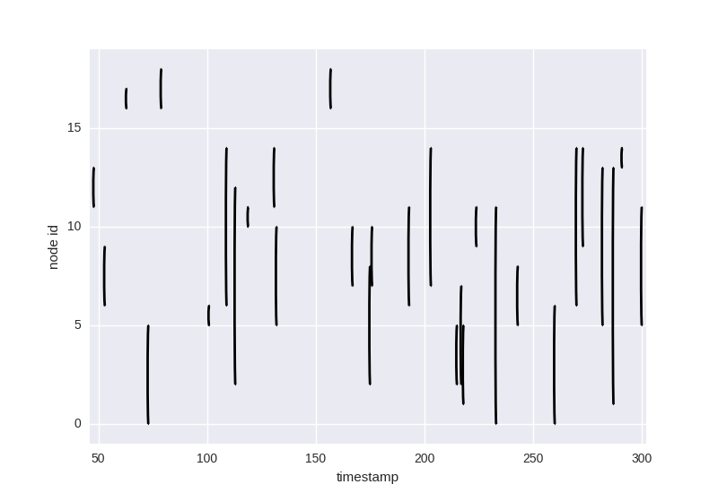
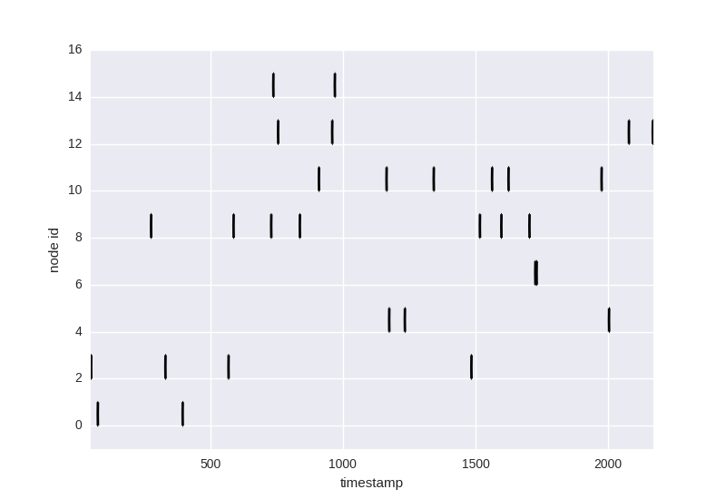

generator module¶
Module contents¶
-
generator.generator(matrix=None, size_pop=10, edges=30, mathfunc=<function <lambda>>)¶ Generate a linkstream from a matrix of probabilities of interaction
Parameters: - matrix – the matrix of probabilities of interaction
- size_pop – number of vertices in the linkstream
- edges – number of edges in the linkstream
- mathfunc – the mathematical function that will compute the time between two edges
Returns: a linkstream randomly generated
-
generator.matrix_prob_creation(size_pop=12, nb_cluster=2, size_cluster_equal=True, high_prob=0.9, low_prob=0.1)¶ Generate a matrix which represents the probability to establish a link between people in a linkstream You can choose an equal repartition in each cluster or a random repartition
Parameters: - size_pop – the number of people in the population
- nb_cluster – the number of clusters
- size_cluster_equal – if you want the same number of people in your clusters of not
- high_prob – the probability to establish a link between two people in the same cluster.
- low_prob – the probability to establish a link between two people in two differents cluster
Example¶
Matrix_prob_creation function¶
this function allows you to create a matrix of probabilites function with a control on various parameters (number of cluster, size of population,etc).
import Profiling_Community_Dynamics as pcd
matrix_1= pcd.matrix_prob_creation(size_pop=20,nb_cluster=3, size_cluster_equal= False, high_prob=0.9,low_prob=0)
#the size of the clusters are random
matrix_2= pcd.matrix_prob_creation(size_pop=20,nb_cluster=10, size_cluster_equal= True, high_prob=0.9,low_prob=0)
#the size of the clusters are equal
Generator function¶
Then we generate a linkstream of 30 edges from these two matrix
ls1=pcd.generator(edges=30,matrix=matrix_1)
ls2=pcd.generator(edges=30,matrix=matrix_2)
We can see the results of the two linkstream in a concrete way with a plot representation
import matplotlib.pyplot as plt
pcd.lsplot(ls1)
plt.show()
pcd.lsplot(ls2)
plt.show()
Linkstreams plot¶
First linkstream with 3 clusters, 20 people, number of people different in each cluster :
Second linkstream with 10 clusters, 20 people, number of people equal in each cluster :
